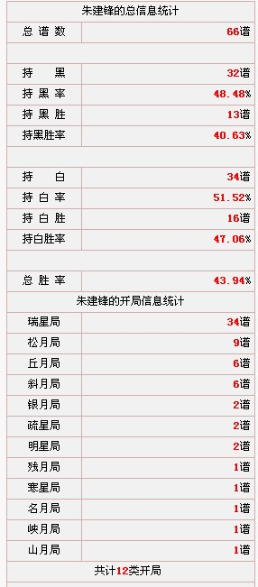
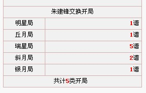

棋手详细信息统计上线
#1 棋手详细信息统计上线作者：小丸.net 发表时间：2011-10-4 7:37:48


位置：棋手信息页面
playerall.asp?name=朱建锋
［此帖子已被 小丸.net 在 2011-10-4 7:38:09 编辑过］
#2 Re:棋手详细信息统计上线作者：小元 发表时间：2011-10-4 8:11:54
统计胜率的话和棋也算一半的吧
#3 Re:棋手详细信息统计上线作者：雨过云舒 发表时间：2011-10-4 8:53:29
我一直以为和棋不算入胜率计算的说……#4 Re:Re:棋手详细信息统计上线作者：踵酃 发表时间：2011-10-4 9:52:58
引用：
原文由 雨过云舒 发表于 2011-10-4 8:53:29 :
我一直以为和棋不算入胜率计算的说……
逻辑方面,不是所有人都正常的.